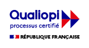

Retour aux formations
Qualité &
Qualité &
Satisfaction.
Notre engagement pour l'excellence pédagogique et la transparence de nos résultats.
Notre engagement pour l'excellence pédagogique et la transparence de nos résultats.
Au-delà de nos certifications réglementaires, nous plaçons la réussite de vos stagiaires et la satisfaction de nos clients au cœur de notre démarche d'amélioration continue.

A2CI est certifié QUALIOPI pour ses actions de formation. Cette certification nationale atteste de la qualité du processus mis en œuvre pour le développement des compétences.
Nous analysons semestriellement les retours d'expérience de chaque stagiaire pour ajuster nos contenus et améliorer continuellement la qualité de nos interventions.
Satisfaction
98%
1er Semestre 2025
Réussite
100%
Validation acquis
"Nous mettons tout en œuvre pour que nos formations soient une réelle valeur ajoutée pour la sécurité de vos collaborateurs et de vos établissements."